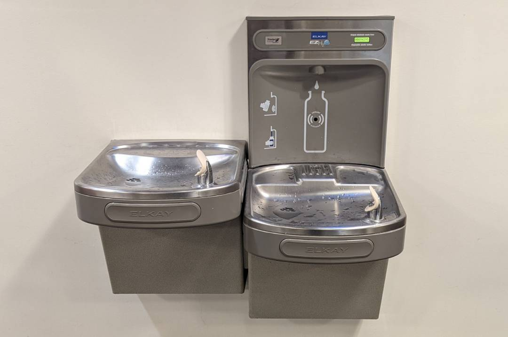
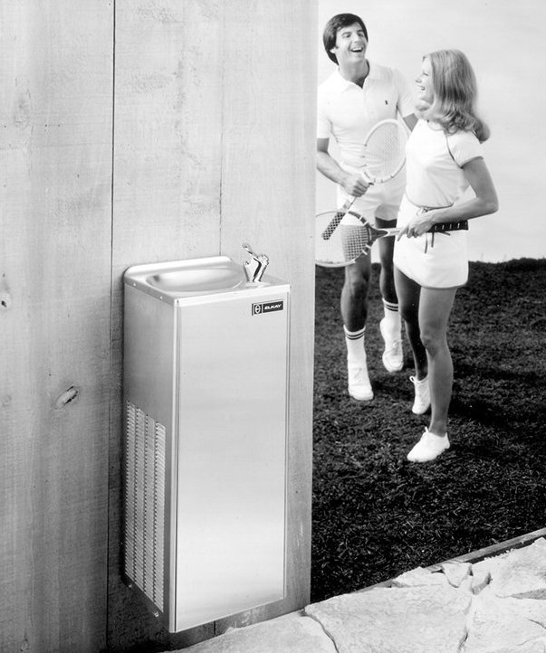
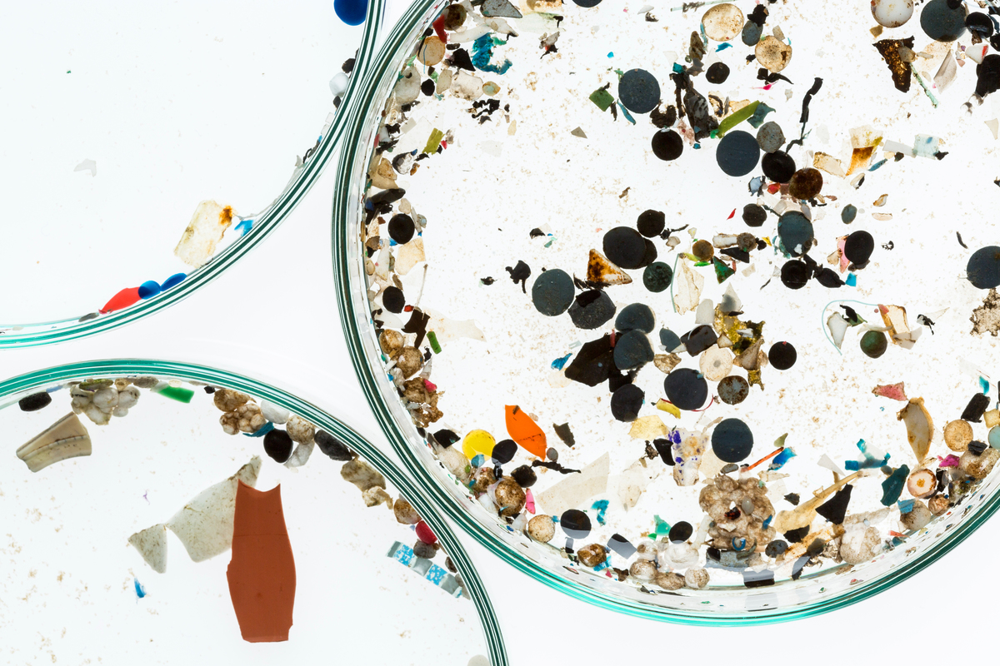
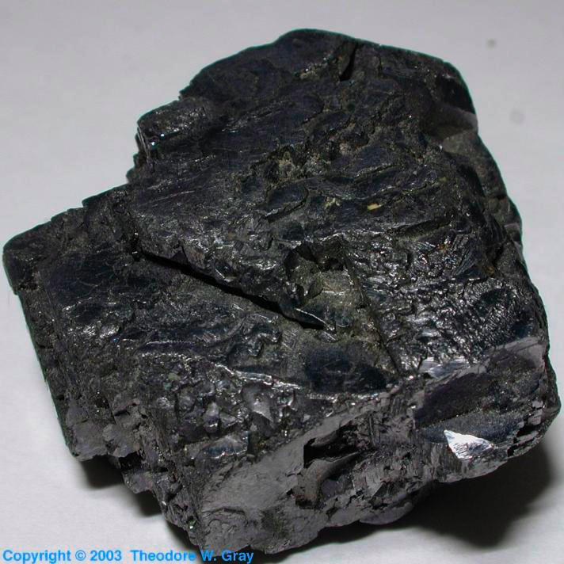
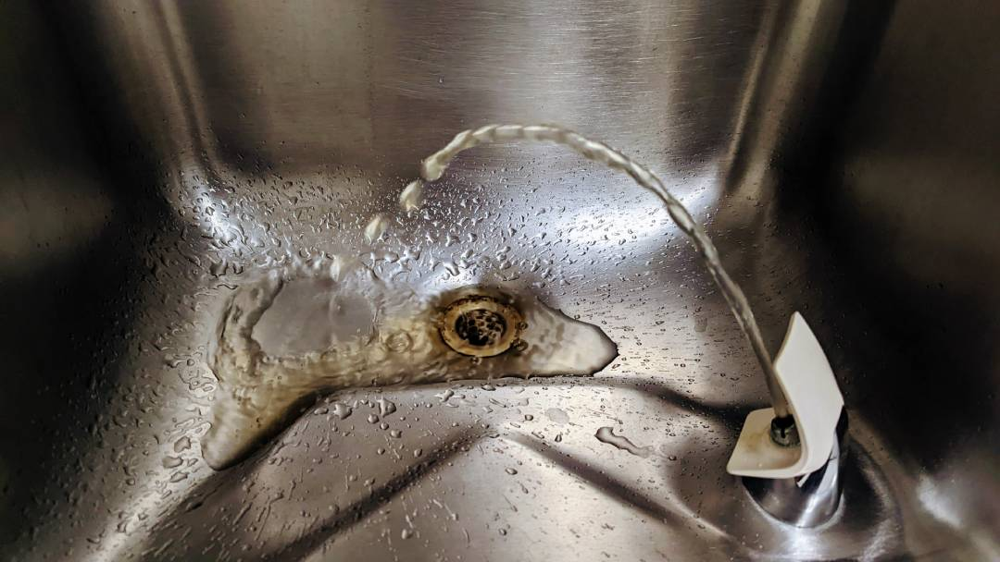

Current Fountains
By Miles Tallia
The guardian Angel of waterfountains:
There are many fountains you encounter every day, whether you have your eye out for them or not they surround you at all times. One of the most commonly recognized fountains is the Humble Elkay. Sporting refrigeration, filtering, and counting services it truly is the gold standard of waterfountains. Having produced over a million units of just one model alone and by being the industry leader in adding water-bottle fillers these fountains are often found in my wildest fantasies.
Elkay started out as a simple plumbing company producing sinks first for houses and then for the army. You may even see their logo on some of your modern appliances. But of course as we all knew theory finally came into their own when they started producing these wonderful waterfountains. There are two important things that happened in the year 1969: my mother's birth, and the first foray of elkay into the world of waterfountains.
What my mother was able to enjoy since the start of her life:

Quickly becoming one of the world's leading waterfountain producers Elkay has earned a place in my heart
known to few others. Elkay continues to be one of the fastest growing saints of waterfountain production.
Merging with other big companies all the time to become bigger and better than they already are. I hope
that my children will look upon a world full of beautiful machines streamlined for getting water in one's
mouth. Hopefully Elkay begins this revolution, but if not somebody else will rise to take its place whether
it be Halsey Taylor, Oasis, Zurn, or any other conglomerate.
---------------------------------
Problems
By Miles Tallia
Unfortunately, waterfountains are not perfect. I know I know hold your shock and surprise because we really need to buckle down and talk about these dangers. The water you drink may not be good for you. This is truly an upsetting notion to have especially if one is as invested into waterfountain culture such as ourselves, but the notion does not hold little water. It is despairing to say but there are many things pervading your water supply, let it be lead, sediment, microplastics, germs and a thousand other things, a drinker must always be weary.
Here are microplastics:
Microplastics, how do they work? Understand that the water cycle of our planet is very interconnected and in many ways a loop. Plastic that you throw on the floor (you're a bad person if you do this by the way) may well end up in any water anywhere on the planet, and once it does that, it can find its way back into the water you drink. Microplastics are dangerous because your body can't digest them and you end up wasting bodily resources on trying to when the good stuff your body actually needs runs away past your symptoms, it's of course more complicated than that but all you need to know is that it's bad for you.
Here is lead:
Lead, how does it work? Lead has been an issue for Americans for decades. Whether it's been in our hats, paints, foods, and now most worryingly, water. The effects of lead poisoning can be disastrous, just ask any person alive and they will tell you that. But what most people don't know is how prevelent it may be in their water supply. There are many filtration products sold to people all around the world advertising their products, because lead is in our water, and we need to worry about it.
Here is sediment:
Sediment, what is it? Sediment is when soil, silt, or any other forms of earth will sneak into a water supply via shoddy plumbing. This is obviously an issue, not only do I not want to drink dirt, but it's a breeding ground for many problematic things that you DO NOT want to bring into your body.
One big issue a lot of people were worried about was whether or not COVID could live on and spread through our waterfountains. The straight answer is no. COVID was problematic for a lot of people in a lot of ways, but thankfully, us waterfountain lovers were spared. But, it is a little more complicated than that. The COVIUD scare made people worried about transmission to the extent that they turned the waterfountains off, but this is actually a big problem. Like planes, waterfountains are built to be in continuous use, and when they aren't things stop to break.
This poster warns of the issues in leaving a waterfountain unplugged:
![Infographic that explains, water is
important for all and that schools could have possibly turned off their waterfountains. It notes that
students should remain 6 ft apart, waterfountains should be cleaned, touchless waterbottle-filling
stations are available. It also says to be vocal about having waterfountains so people remember
to use them and encourages people to use waterbottles. It also provides a resource for those who
have turned off their waterfountains on turning them back on again ("turning on" plumbing is a
rather complicated progress that requires much care).](assets/images/keep_tap_on_poster-1080.jpg)
As you can see it's not a small issue. In fact, none of these issues are small. We need to act fast on fixing these problems and get people back into waterfountains.